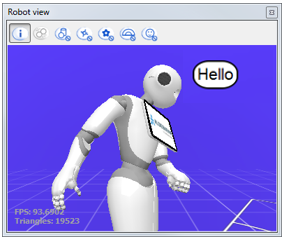
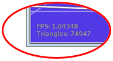
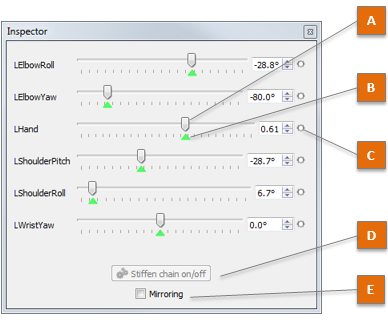
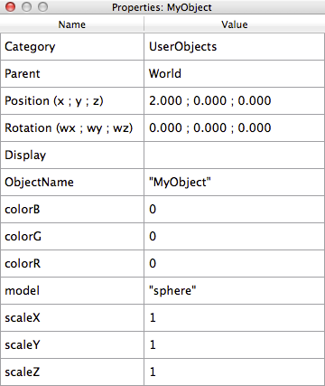

Robot View¶
What is the Robot View¶
The Robot View displays in a 3D view the robot Choregraphe is connected to.
It allows you to check and modify the joint values (and then move the limbs) using the Limb properties.
{kind=link}
The Robot View also displays:
- sentences said or heard by the robot,
- objects, people or zones involved in the world perception.
Toolbar¶
| Button | Click on this button to ... |
|---|---|
Hide or show information data such as FPS and triangles displayed.  |
|
Hide or show information about collisions. For further details, see: Timeline Analysis. |
|
Hide or show objects stored in memory by the ALWorldRepresentation module. For further details, see: ALWorldRepresentation. |
|
Disable tracking of the robot position in the world. If checked, the robot torso will not move on the grid nor rotate. |
|
Disable tracking of actuator values. If checked, the robot will be frozen on the display, in order to save CPU on the robot. |
|
Hide or show the areas defined by ALEngagementZones module. For further details, see: ALEngagementZones. |
|
Hide or show people detected by ALPeoplePerception module. Caution: if show is selected, the ALEngagementZones module is launched automatically each time you connect Choregraphe to a robot. For further details, see: ALPeoplePerception. |
{kind=link}
Displaying object or limb properties¶
Limb properties¶
This panel enables you to modify the joint values of each limb.
{kind=link}
The table below describes in details the control buttons and indicators of the Limb properties:
| Part | Name | Description |
|---|---|---|
| A | Slider | Allows you to adjust the joint value. You can move it, as well as enter a value in the associated text box. The robot tries to reach the command value with its joint as soon as possible. For further details, see: |
| B | Current joint value | The color indicates if the requested value has been reached. (green) means the current joint value = the last requested value. (blue) means that the joint value is not (or not yet) the requested value. It could be because:
|
| C | Record button | Saves the defined value, when a Timeline box is currently opened. This button can be: (grey): you cannot store joint values because you are not currently editing a Timeline box. (black): the current joint value is not stored at the current selected frame. (black and red): the current joint value is being stored at the current selected frame. For further details, see: Storing joint value from the Robot view. |
| D | Stiffen chain on/off button | Sets on/off the Stiffness of the whole selected chain of joints (Head, Arm or Leg). This button can be:  (green): Stiffness off, you can move this part manually on the real robot, but commands have no effect. (green): Stiffness off, you can move this part manually on the real robot, but commands have no effect. (orange): intermediate state depending on the Stiffness value.
(red): Stiffness on, the robot is able to move this part when requested, but you cannot move it manually.
|
| E | Mirroring option | If selected, actions (send a command value, register a joint value, etc) are also executed on the symmetric limb. For example left and right arms will move the same way. |
Moving joints from the Robot view¶
Simulated robot¶
To move joints of a simulated robot, using the Limb properties:
| Step | Action |
|---|---|
In the Robot View, click any moving part of the robot (head or limbs). The Limb properties appears. |
|
Use one of the Sliders to adjust the joint value. The simulated robot moves. |
Real robot¶
To use the Limb properties to make a real robot move:
| Step | Action |
|---|---|
| Make sure Choregraphe is connected to a real robot. | |
In the Robot View, click any moving part of the robot (head or limbs). The Limb properties appears. |
|
Make sure the Stiffness is on. If not, click the Stiffen chain on/off button. |
|
Use one of the Sliders to adjust the joint value. Simulated and real robots move together. |
Moving the real robot to update the Robot view¶
To edit the Limb properties using the real robot:
| Step | Action |
|---|---|
| Make sure Choregraphe is connected to a real robot. | |
In the Robot View, click any moving part of the robot (head or limbs). The Limb properties appears. |
|
| If you chose a leg, hold your robot by the waist/torso to prevent it to fall down. | |
Make sure the Stiffness is off. If not, click the Stiffen chain on/off button. |
|
Move the real robot manually. Simulated and real robots move together. |
Storing joint value from the Robot view¶
To store a joint value using the Robot view:
| Step | Action |
|---|---|
| Make sure a Timeline box is opened. | |
| Click on the Timeline in order to select the Motion keyframe you want to modify. | |
In the Robot View, click any moving part of the robot (head or limbs). The Limb properties appears. |
|
Use one of the Sliders to adjust the joint value, or click the Record button. The Record button becomes red and the joint value is stored in the current Motion keyframe. |
Deleting joint value from the Robot view¶
To delete a joint value in a Motion keyframe:
| Step | Action |
|---|---|
| Click on the Motion keyframe you want to modify. | |
In the Robot View, click any moving part of the robot (head or limbs). The Limb properties appears. |
|
Click the red Record button. the Record button becomes black and white and the joint value is removed from the current Motion keyframe. |
For further details, see:
{kind=link}
ALWorldRepresentation object properties¶
{kind=link}
This panel shows data about the object currently selected. The data displayed depends on the Category of the objects selected. Some data items are always shown:
- Category
- Parent
- Position
- Rotation
The position is given relatively to the Parent object.
Additionally, you can give a specific shape, color and scale to the object.
To customize the aspect of your object, you have to set the Display
attribute with the following fields:
colorR(float) – red component of the color (between 0 and 1)colorG(float) – green component of the color (between 0 and 1)colorB(float) – blue component of the color (between 0 and 1)scaleX(float) – scale along x of the objectscaleY(float) – scale along y of the objectscaleZ(float) – scale along z of the objectmodel(text) – name of the model of the object (without the .mesh extension)
Warning
Colors are defined as float between 0 and 1.
This has to be done in NAOqi. For instance, in Python:
wr = ALProxy("ALWorldRepresentation", "127.0.0.1", 9559)
attribute = "Display"
fields = [["colorR", "float"],
["colorG", "float"],
["colorB", "float"],
["scaleX", "float"],
["scaleY", "float"],
["scaleZ", "float"],
["model", "text"]]
# assuming the category "mycategory" exists
success = wr.addAttributeToCategory("mycategory", attribute, fields)
# assuming the object "myobject" exists in category "mycategory"
values = [["colorR", 1.0],
["colorG", 1.0],
["colorB", 0.0],
["scaleX", 0.1],
["scaleY", 0.2],
["scaleZ", 0.3],
["model", "cylinder"]]
success = wr.updateAttribute("myobject", attribute, 1, values)
For more details, refer to ALWorldRepresentation.
Note
Several models are already provided:
- “arrow”
- “cylinder”
- “sphere”
If you want to set a custom model for your object, just provide an Ogre mesh model (*.mesh file) and put it in the share/choregraphe/media/visual folder of Choregraphe installation directory. The name of the model to provide to ALWorldRepresentation is without the .mesh extension.